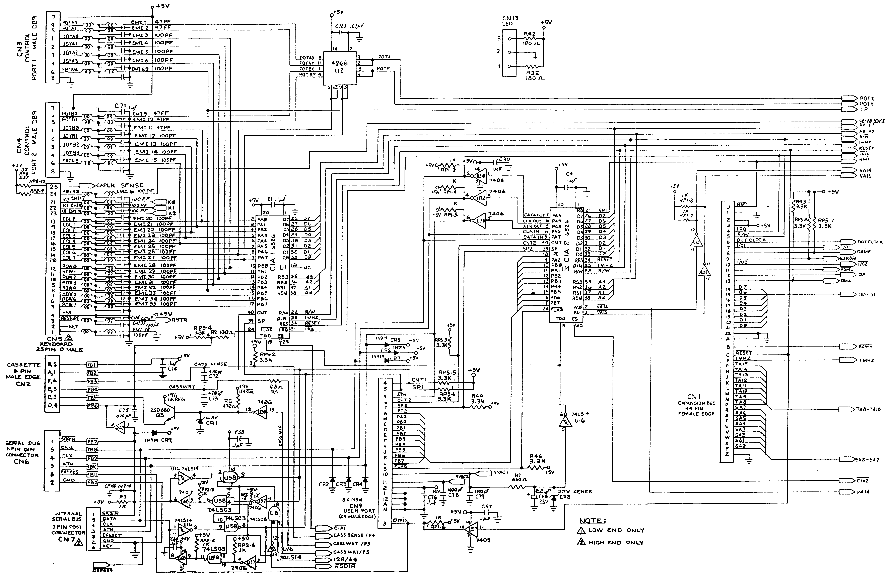
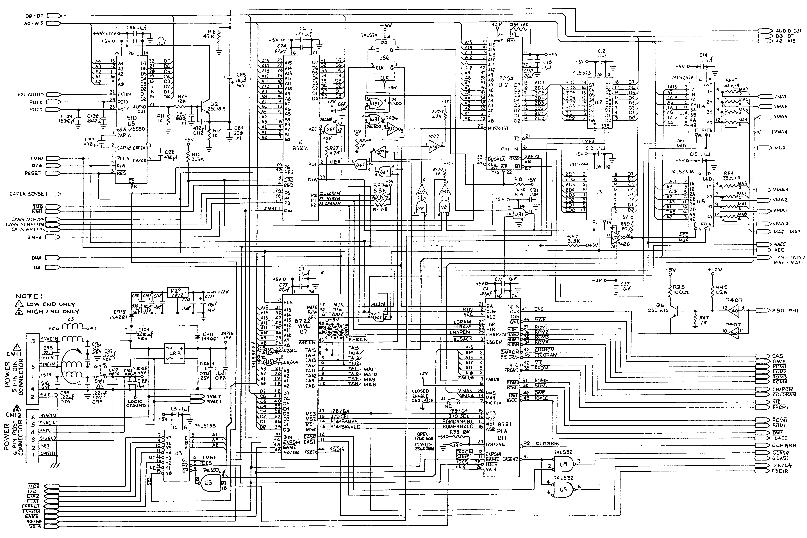
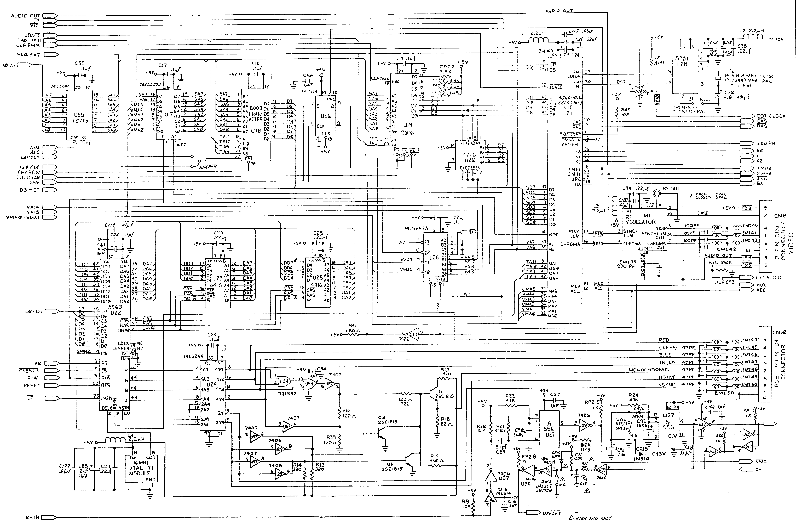
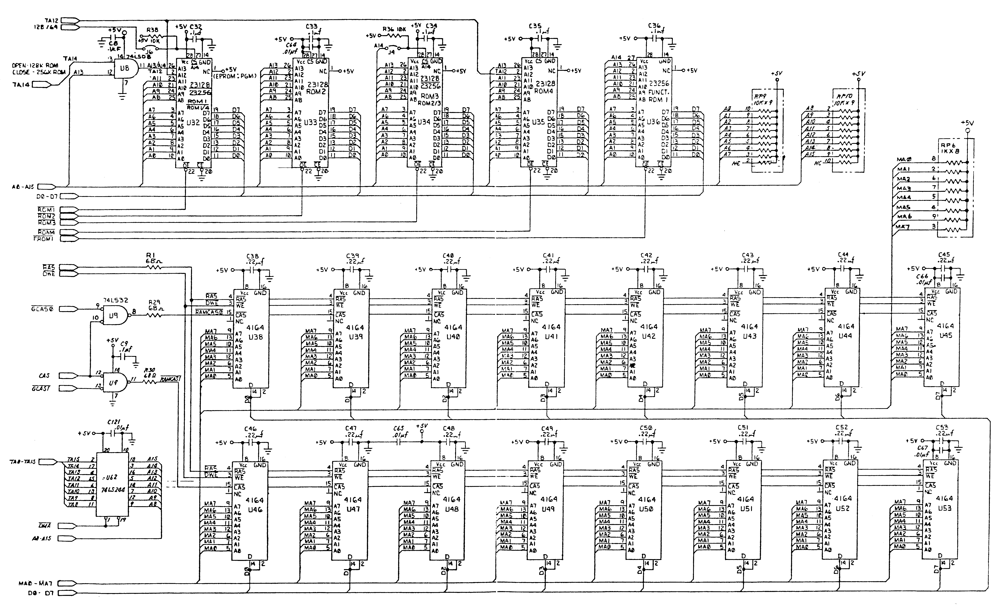
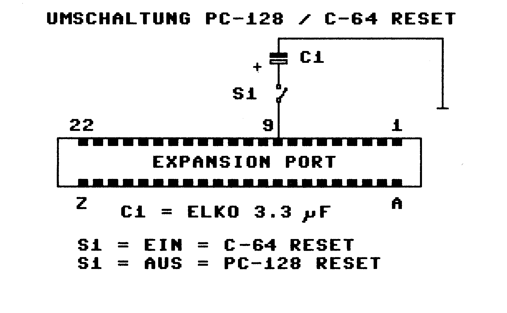
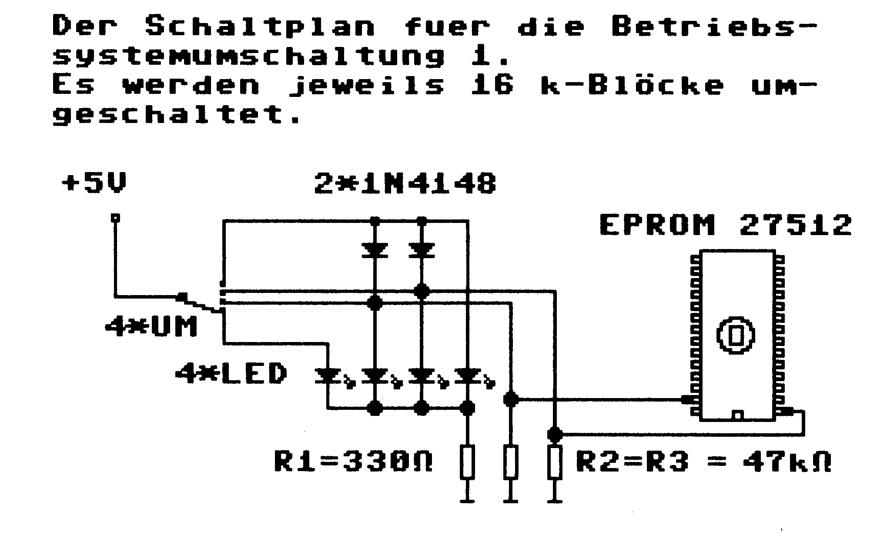
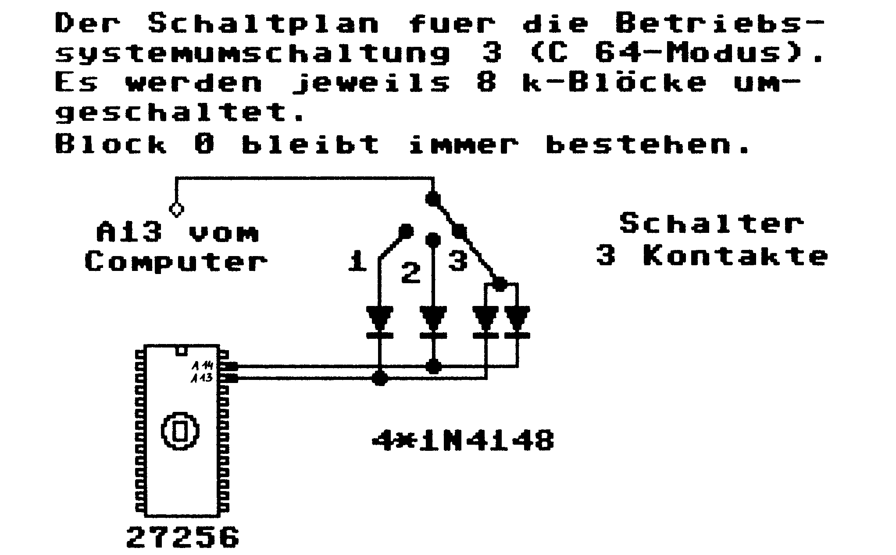
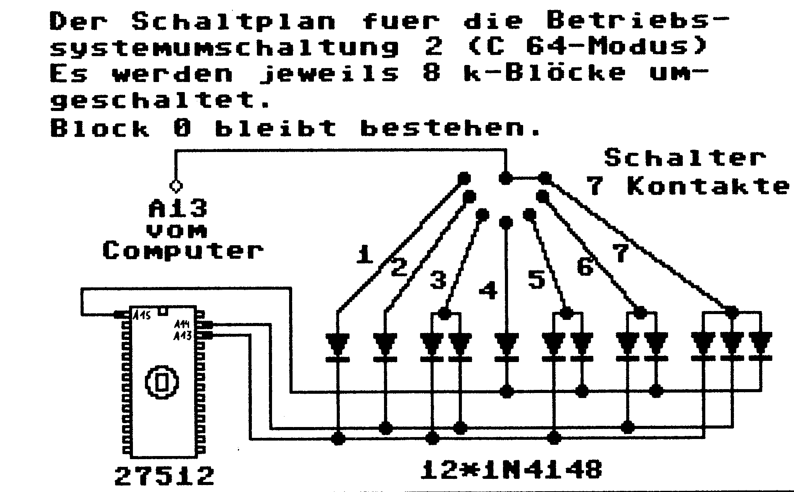

Hardware-Tips zum C 128
Die Hardware des C 128 verbirgt noch einige Geheimnisse. Ein Teil davon wird nun offenbart. Außerdem stellen wir verschiedene Methoden vor, um mehrere Betriebssysteme im C 128- oder C 64-Modus in ein einziges EPROM zu brennen.
Der elektrische und mechanische Aufbau des C 128 ist noch für einige Kniffe und Tricks gut. Sie können durch kleine Eingriffe an der Hardware des C 128 Änderungen am System vornehmen, die zum Beispiel eine Umschaltmöglichkeit zwischen zwei verschiedenen C 128-Betriebssystemen ohne großen Aufwand ermöglichen. Des weiteren lassen sich in einem einzigen 27512-EPROM vier Betriebssysteme im C 128-Modus und sogar sieben im C 64-Modus unterbringen.
Diesen Artikel sollten Sie aber nur lesen, wenn Sie sich mit Hardware einigermaßen gut auskennen, da Sie sonst schnell etwas an Ihrem Computer zerstören könnten. Beachten Sie bitte außerdem, daß ein Öffnen des Gerätes einen Verlust der Garantieansprüche nach sich zieht. Als Bonbon erhalten Sie noch den kompletten Schaltplan des C 128. Bitte bedenken Sie, daß die vier einzelnen Teilschaltpläne als ein Ganzes angesehen werden müssen.




Übersteuerung monochromer Monitore
Ein Problem der Anpassung Commodore-fremder, einfarbiger 80-Zeichen-Monitore läßt sich leicht beheben: Es kann vorkommen, daß fremde Schwarzweiß-Monitore beim Anschluß an das monochrome Ausgangssignal (Kontakt 7 des RGB-Ausgangs) zum Übersteuern neigen. Dies macht sich dadurch bemerkbar, daß die Zeichen auf dem Bildschirm nicht mehr gestochen scharf, sondern verwaschen wirken. Der Grund liegt darin, daß das Ausgangssignal eine zu hohe Spitzenspannung aufweist, die den Eingang des Monitors übersteuert. Eine Lösung ist das Herabsetzen dieser Spitzenspannung.
Man muß nicht unbedingt durch externe Beschaltung das Signal »bändigen«. Leichter ist es, im Computer eine Änderung vorzunehmen. Dazu betrachten wir uns den dritten Teil des folgenden Schaltplans:
In der unteren Hälfte am rechten Bildrand sehen Sie die RGB-Buchse CN10. Das fragliche Signal liegt an Kontakt 7 an (Monochrome). Verfolgen Sie nun diese Leitung bis zum Transistor Q1 (2SC1815). Wenn Sie nun an die Basis des Transistors (der Kontakt, der mit dem Widerstand R26 verbunden ist) einen Widerstand von 100 Ohm anlegen und das andere Ende des Widerstandes mit Masse verbinden, haben Sie das Ausgangssignal auf ein Maß begrenzt, das Ihren angeschlossenen Monitor nun nicht mehr übersteuert.
Betriebssystem-Umschaltung eingebaut
Vielleicht ist Ihnen beim Betrachten des vierten Schaltplanes schon die merkwürdige Beschriftung der Bausteine U32 und U34 aufgefallen? Dort sind nämlich zwei verschiedene Werte für diese Bausteine angegeben. Zum einen steht da 23128, aber im gleichen Zug findet sich auch die Bezeichnung 23256. Hardware-Kenner werden nun wissen, daß ein 23128-ROM 16 KByte enthält, ein 23256 aber 32 KByte an Informationen beherbergt. Was hat es also damit auf sich?
Sehen wir uns erst einmal an, was die ROMs U32 bis U35 eigentlich enthalten. Betrachten Sie dazu auch das obere Drittel des vierten Schaltplanes:
U32 – In diesem 16-KByte-Baustein befindet sich der Basic-Interpreter für den C 64-Modus und dessen Betriebssystem
U33 – Die ersten 16 KByte des Basic-7.0-Interpreters für den C 128-Modus
U34 – Der Inhalt dieses ROMs besteht aus den zweiten 16 KByte des Basic-7.0-Interpreters
U35 – Dieser ROM-Baustein enthält 16 KByte Kernel (Betriebssystem) für den C 128-Modus
Wir stellen also fest: vier 16-KByte-Bausteine. Warum können aber U32 und U34 mit 32-KByte-Bausteinen bestückt werden?
Es ist durchaus möglich, die Inhalte der ROMs U32 und U35 in ein einziges EPROM vom Typ 27256 zu brennen, in den Platz U32 zu stecken und den Steckplatz U35 freizulassen. Gleiches geschieht dann auch mit den Inhalten der ROMs U33 und U34, die, in ein EPROM 27256 gebrannt, im Steckplatz U34 ein neues Zuhause finden. Die Auswahl, ob nun vier Bausteine zu je 16 KByte oder zwei zu je 32 KByte angesprochen werden, erfolgt über einen dreifachen Ein-/Aus-Schalter. Betrachten wir uns den Plan 2. Im unteren rechten Viertel finden Sie die PLA 8721 (U11), die für die Selektion der einzelnen Bausteine verantwortlich ist.
Am Pin 27 können Sie eine Brücke (J3) erkennen, die für die Auswahl der verwendeten Typen zuständig ist. Bei offener Brücke spricht die PLA die vier 16-KByte-Bausteine an, bei geschlossener die 32 KByte-EPROMs. Des weiteren müssen wir noch den Plan 4 betrachten. Jeweils links oberhalb der ROMs U32 und U34 finden Sie eine Brücke (J4 und J6), die ebenfalls eine Rolle bei der Art der verwendeten Bausteine spielen. Sind diese Brücken offen, müssen 16-KByte-Bausteine eingesetzt sein, bei geschlossenen Brücken wären es die 32 KByte-EPROMs. Was kann man nun aber damit anstellen?
Eine Möglichkeit wäre, in einem 27256-EPROM in den unteren 16 KByte den Inhalt des ROMs U32 und im oberen 16-KByte-Bereich ein geändertes Kernel für den C 128-Modus einzuprogrammieren. Würde nun der Baustein U35 in seinem Sockel belassen und das neue EPROM in den Platz U32 eingesetzt, so könnte ohne viel Aufwand intern zwischen zwei C 128-Betriebssystemen umgeschaltet werden. Es müßten nur die Brücken J3, J4 und J6 mit einem dreifachen Ein-/Aus-Schalter gleichzeitig überbrückt oder geöffnet werden. Allerdings ist zu beachten, daß sich im Steckplatz U34 ebenfalls ein 32 KByte-EPROM befinden muß, das im oberen 16-KByte-Bereich zum Beispiel einen geänderten Teil des Basic-7.0-Interpreters enthält.
Wie Sie nun, wie eingangs erwähnt, mehrere Betriebssysteme in einem 27512-EPROM unterbringen können, erklären wir Ihnen ein paar Absätze später.
Bildschirm »einfrieren«
Vielleicht möchten auch Sie gerne Bildschirmfotos machen, die »lupenrein« und nicht verwaschen wirken. Oder sei es nur, um eine besonders gelungene Grafik, die sich leider zu schnell bewegt, im Detail betrachten zu können. Im alten C 64 konnte man als einzige Möglichkeit das Bild anhalten, wenn man den READY-Eingang des Prozessors durch ein Signal belegte. Nahm man jedoch die Sperre wieder weg, stürzte das Programm jedes zweite Mal ab. Im C 128 läßt sich ein stehendes Bild auch ohne das Risiko eines Systemabsturzes erreichen. Dazu muß nur das Signal »DMARQST«, das von Pin 11 des VIC (U21) kontrolliert wird, auf HIGH gelegt werden. Dies läßt sich durch einen einfachen Ein-Taster bewerkstelligen. Das eine Kabel verbinden Sie mit Pin 11 des VIC, das andere mit +5V. Schon erhalten Sie ein stehendes Bild, das nach Loslassen des Knopfes in 99,9 Prozent aller Fälle weiterläuft. Den Schalter können Sie sich zum Beispiel auf der rechten Seite neben dem Reset-Knopf einbauen und das Kabel frei unter der Platine verlegen.
Farbabgleich
Sollten Ihnen die Farben, die Ihr C 128 liefert, etwas schwach und ausgebleicht vorkommen, kann es sein, daß der Video-Prozessor nicht die richtige Taktfrequenz erhält, die nötig ist, um ihn mit dem Fernseher (Monitor) zu synchronisieren. Abhilfe kann ein Nachregulieren der Frequenz sein. Dazu drehen Sie den Drehkondensator C20 (Plan 3, oben rechts – Sitz auf der Platine neben dem VIC) etwas nach links oder rechts. Probieren Sie so lange, bis Sie den besten Farbwert erhalten.
C 64-Modus gleich beim Einschalten
Da derzeit noch nicht allzuviel Software für den C 128- und CP/M-Modus auf dem Markt erhältlich ist, wird der C 128 wohl meistens im C 64-Modus betrieben. Es ist aber mit der Zeit lästig, immer beim Einschalten oder einem Reset die Commodore-Taste gedrückt zu halten oder mit dem Befehl GO 64 in dessen Modus zu gelangen. Abhilfe kann die aus Bild 1 ersichtliche Schaltung schaffen.

Das Funktionsprinzip: Der C 128 springt bei eingestecktem Modul im Expansion-Port automatisch in den C 64-Modus. Es muß also nur das Vorhandensein eines Moduls simuliert werden. Da das System auf Grund des Pegels der EXROM- oder GAME-Leitung am Expansion-Port feststellt, ob ein Modul eingesteckt ist, muß nur die EXROM-Leitung auf Masse gelegt werden. Verbindet man diese Leitung nun direkt mit Masse, so springt der Computer in die C 64-Betriebsart. Es folgt aber eine enttäuschende Einschaltmeldung: »30719 BASIC BYTES FREE« steht da auf dem Bildschirm. Was ist der Grund, daß plötzlich 8 KByte weniger zur Verfügung stehen? Für den Computer steckt nun ein Modul am Expansion-Port, obwohl dort keines zu sehen ist. Auch ein Blick in den Speicherbereich ab $8000 zeigt, daß dieser Bereich nicht ansprechbar ist. Also muß dieser Bereich wieder durch Entfernen der Modulkennung dem Gesamtspeicher zugänglich gemacht werden. Eine Möglichkeit dazu ist, einen Kondensator an entsprechender Stelle einzubauen.
Bei genauer Betrachtung der Funktionsweise eines Kondensators zeigt sich, daß dieser im ersten Moment der Aufladungsphase einen Kurzschluß (geschlossener Schalter) darstellt. Damit wäre eine automatische Modulkennung durch Beschalten des EXROM-Anschlusses mit Masse erreicht. Bei ersten Versuchen mit einem 10µF-Kondensator funktionierte die Sache bereits recht gut. Das System meldete sich zwar immer noch mit »30719 BASIC BYTES FREE«, doch war der Speicherbereich ab $8000 nun frei. Nach weiteren Experimenten mit verschiedenen Kapazitäten stellte sich dann heraus, daß sich bei 3,3µF der Kondensator zum Zeitpunkt der Modulkennung genügend entladen hat. Zum Zeitpunkt der Berechnung der Speichergröße aber ist er genügend aufgeladen, um die Berechnungsroutine nicht weiter zu stören.
Bei geschlossenem Schalter S1 meldet sich nun der C 128 direkt mit der Einschaltmeldung des C 64 und »38911 BASIC BYTES FREE«.
Dieser Kondensator muß aber schaltbar gemacht werden, da man sonst nie mehr in den C 128-Modus gelangen kann.
Mehrere Betriebssysteme in größeren EPROMs
Für den C 128-Modus:
Mit der in Bild 2 abgebildeten Schaltung wird es nun möglich, auf einfache Weise vier Betriebssysteme im C 128-Modus benutzen zu können (das Betriebssystem ist im ROM U35 enthalten). Diese Schaltung läßt sich ebenfalls verwenden, wenn man einen Teil des Basic-7.0-Interpreters »umstricken« möchte (zum Beispiel, um die Einschaltmeldung, die sich im ROM U34 befindet, zu verändern. Es kann aber auch eine OLD-Routine integriert werden. Eine solche Routine, die sich zum Einbinden eignet, wurde in Ausgabe 12/85 veröffentlicht).

Ein EPROM vom Typ 27512 kann maximal 64 KByte an Informationen aufnehmen. Das Betriebssystem des C 128 umfaßt aber »nur« 16 KByte. Es ist also möglich, vier C 128-Betriebssysteme durch Umschalten zur Verfügung zu haben.
Zum Einbau gehen Sie folgendermaßen vor: Nachdem Sie Ihre verschiedenen Betriebssysteme (oder Interpreter-Versionen) getestet und nacheinander in ein 27512-EPROM gebrannt haben, öffnen Sie Ihren C 128 (Vorsicht: Garantieverlust!).
Biegen Sie Pin 1 und 27 des EPROMs nach oben, so daß sie keinen Kontakt mehr mit dem Computer haben können. Stecken Sie das EPROM in den jeweiligen Sockel (Kernel: U35, Interpreter Low: U33, Interpreter High: U34) und beschalten Sie die beiden herausragenden Beinchen wie aus Bild 2 ersichtlich.
Die Schaltung ist nicht absturzfrei. Je nachdem, ob die gerade bearbeitete Routine des jeweiligen Systems mit der originalen übereinstimmt, kann es auch ohne Absturz funktionieren. Das System stürzt nur dann ab, wenn innerhalb verschiedener Routinen umgeschaltet wird.
Für den C 64-Modus:
Hier stellen wir Ihnen zwei Arten der Umschaltung vor: zum einen für drei, zum zweiten für sieben verschiedene Kernel-Versionen. Beginnen wir mit der kleineren der beiden Möglichkeiten.
Hierfür benötigen Sie ein EPROM des Typs 27256 (32 KByte). Zu beachten ist hierbei, daß der Interpreter-Bereich ($A000 bis $BFFF) in den untersten 8 KByte des EPROMs liegen muß. Die anderen 24 KByte können Sie mit drei verschiedenen Kernel-Versionen für den C 64-Modus belegen. Nachdem das EPROM gebrannt ist, schrauben Sie den Computer auf. Der betreffende Steckplatz trägt die Bezeichnung U32.
Entnehmen Sie nun den Original-ROM-Baustein. Biegen Sie Pin 26 und 27 des 27256-EPROMs in die Waagerechte, so daß diese keinen Kontakt mehr mit dem Sockel haben können und setzen Sie das EPROM in den Steckplatz U32 ein. Löten Sie ein Kabel an die Unterseite der Platine, und zwar an den Pin 26 des Steckplatzes U32. Dieses Kabel verbinden Sie mit dem Mittelkontakt des 3fach-Umschalters. Beschalten Sie nun die beiden freien IC-Beinchen und den Umschalter so, wie es aus Bild 3 ersichtlich ist.

Diese Art der Umschaltung ist nicht absturzfrei.
In einem EPROM vom Typ 27512 lassen sich, abzüglich des Interpreters, der die ersten 8 KByte des EPROMs belegen muß, sieben verschiedene Betriebssysteme unterbringen. Denkbar wären zum Beispiel das 64'er-DOS, Speeddos, Hypra-Kernel, das Original-Betriebssystem und ein paar auf den Eigenbedarf abgestimmte Varianten.
Nachdem das EPROM gebrannt wurde, öffnen Sie den Computer und entfernen den Baustein U32. Biegen Sie Pin 1, 26 und 27 des EPROMs in die Waagrechte und stecken das 64 KByte-EPROM in den Steckplatz U32.
Löten Sie nun an der Unterseite der Platine einen Draht an den Pin 26 des Bausteins U32. Dieser Draht wird mit dem Mittelkontakt des 7fach-Schalters verbunden. Die Beschaltung der frei in der Luft hängenden IC-Beinchen mit dem Drehschalter entnehmen Sie bitte Bild 4.

Diese Möglichkeit der Umschaltung ist nicht absturzfrei.
Wenn Sie auch etwas zum Thema »Tips und Tricks zur C 128-Hardware« wissen, schreiben Sie uns doch. Wir werden alle Anregungen prüfen und gegebenenfalls auch veröffentlichen.
(Franz Sauer/dm)